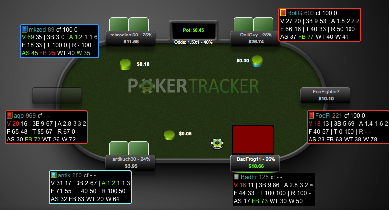
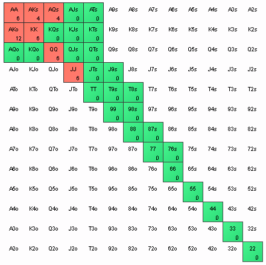
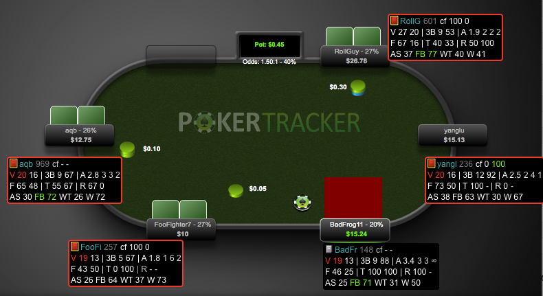
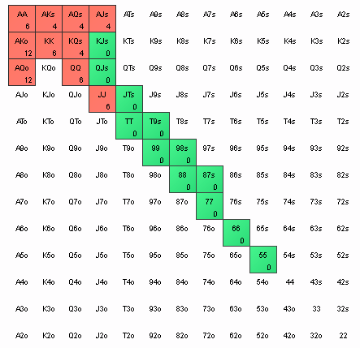
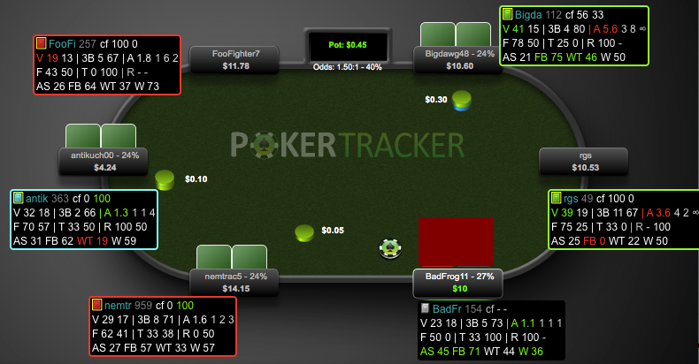
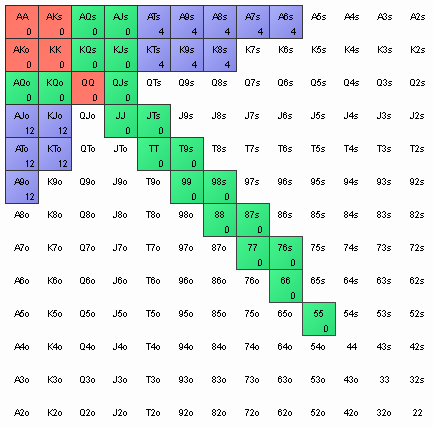

Scenario 1

Opponents
- HJ is opening fairly wide. 25% RFI on HJ.
- HJ's fold to 3bet of 53% means we can't 3bet bluff with pure air
- SB and BB look to have pretty wide calling ranges and probably play poorly postflop, so we'd be happy to get in with speculative hands
- SB and BB have low 3bet %, so we're not worried about getting squeezed
Strategy
3bet a narrow value range so we don't scare away the poor players in the blinds. Call with a wide range that can flop big strength.
Proposed range

Scenario 2

Opponents
- Same opener as scenario 1 in the same position
- SB and BB are much more competent players, not as excited to get in with them postflop
- SB and BB have moderate and high 3bet %
Strategy
Widen our 3bet range a bit because SB and BB folding is no longer a problem, and HJ will call fairly wide. Shrink our calling range because we'll be squeezed often.
Proposed range

Scenario 3

Opponents
- HJ opening range is tighter, but they look like a bad player, so we're happy to get in with lots of speculative hands.
- HJ's fold to 3bet of 80% (4/5) suggests we can 3bet bluff a lot
- SB has a high 3bet, so calling isn't super attractive for us
Strategy
3bet a small value range and big bluff range. Call with a moderate number of speculative hands.
Proposed range
